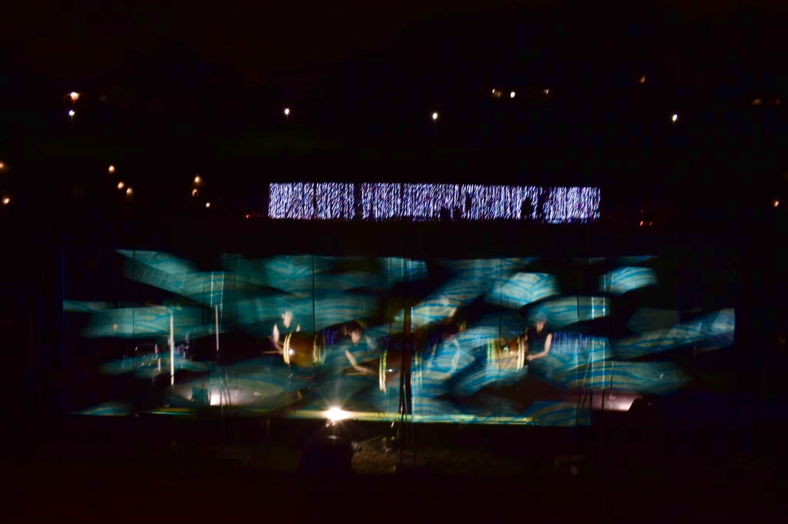
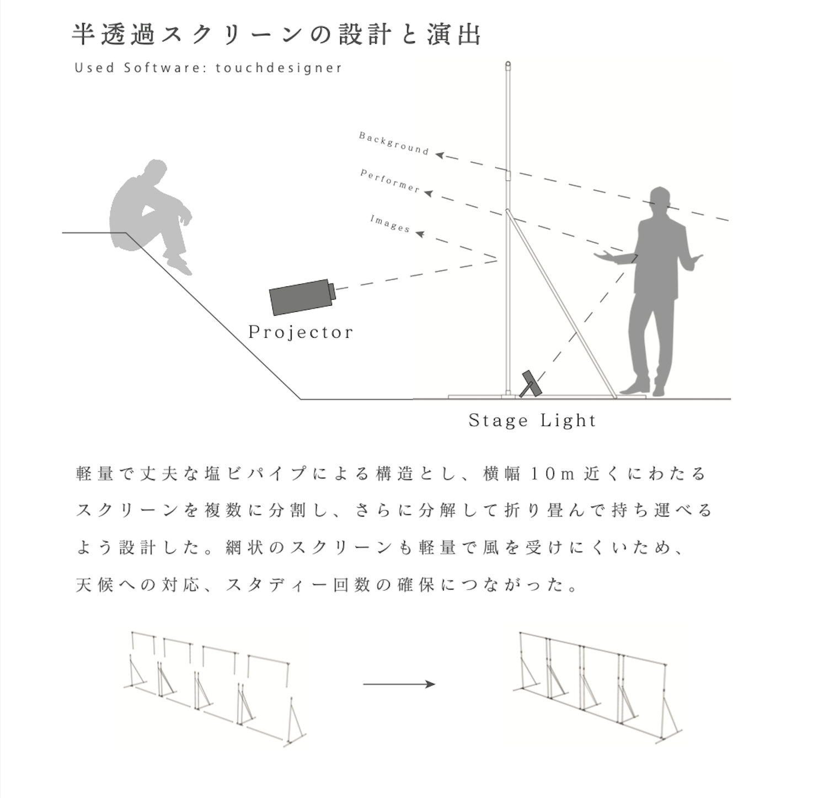

Theater Night 2019
利根運河をまたぐ巨大スクリーンに、オーディオリアクティブな映像をリアルタイムで投影。
メッシュ状の半透明スクリーンを製作し、舞台の前面に配置することで、運河を背景に映像が浮かんで見える演出を目指した。
音楽に合わせて揺れ動く映像の光は一部がスクリーンを透過し、舞台、水面、対岸までもが一体となった。

t.
利根運河をまたぐ巨大スクリーンに、オーディオリアクティブな映像をリアルタイムで投影。
メッシュ状の半透明スクリーンを製作し、舞台の前面に配置することで、運河を背景に映像が浮かんで見える演出を目指した。
音楽に合わせて揺れ動く映像の光は一部がスクリーンを透過し、舞台、水面、対岸までもが一体となった。